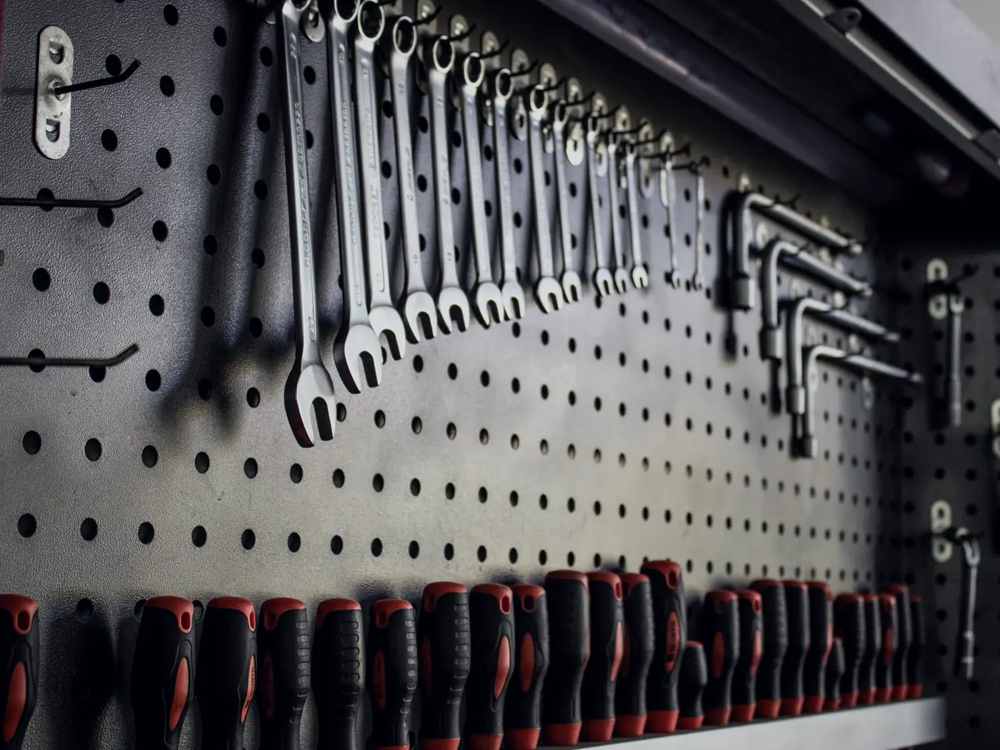
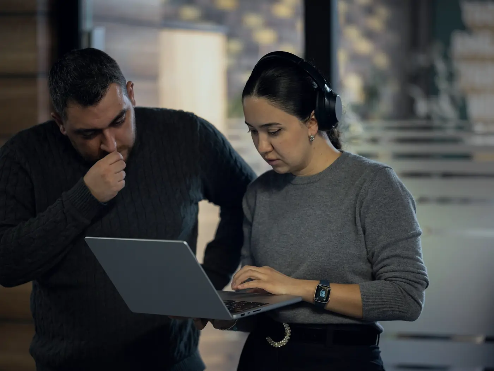
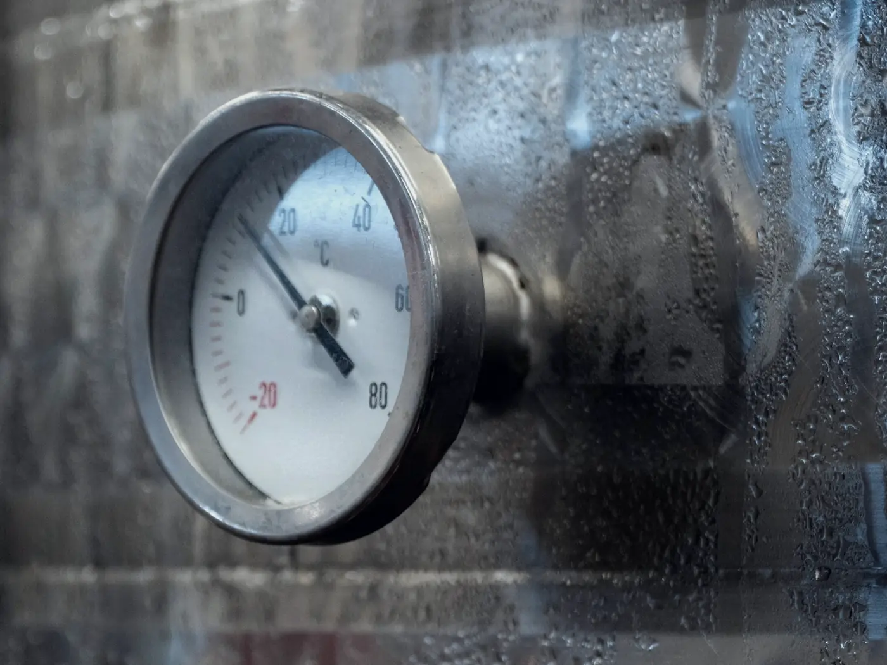

01Aloituspäivä
Yksi päivä alkuun
alkaen 2 500 €
- Työkalujen ja lisenssien valinta
- Tekoälyn käyttöohje
- 5 valmista työnkulkua tiimillenne
- Lähtötason mittaus
Tekoäly käyttöön · 10–200 hengen yrityksille
Työkalut ovat halpoja. Vaikeinta on saada ihmiset käyttämään niitä hyvin, ja sen me hoidamme. Valitsemme työkalut, otamme ne käyttöön, sovimme säännöt, viemme ne tiimin oikeisiin töihin ja pidämme kuukausikulut ennustettavina.
51 % suomalaisista vähintään 10 hengen yrityksistä käyttää tekoälyä. Vain 17 %:lla niistä on sille suunnitelma.
Lähde: Työterveyslaitos, tammikuu 2026.
Yritykset heilahtavat hallitsemattomista tekoälykuluista jyrkkiin kattoihin, eikä kumpikaan toimi. Lopputuloksen ratkaisee se, kuinka hyvin ihmiset työkaluja käyttävät.
½
Aloittelijat onnistuvat noin puolet harvemmin kuin kokeneet käyttäjät. Osaaminen ratkaisee enemmän kuin lisenssit.
Lähde: Anthropicin tutkimus, kesäkuu 2026
29 $
kuukaudessa: Accenturen uusi katto henkilöstön Claude-budjeteille, kun osa oli käyttänyt noin 1 000 $.
Lähde: 404 Media, 15.10.2026
1 500 $
henkilöä ja koodaustyökalua kohden: Uberin asettama katto tekoälykuluille.
Lähde: Bloomberg, kesäkuu 2026
Esimerkki
Keksitty lämpöyritys käyttöönoton neljännellä viikolla. Kysymys tarkistetaan sääntöjä vasten, siihen vastataan ja sen hinta lasketaan, ja hallintanäkymä päivittyy samalla.
Esimerkkinäkymä. Jarin kysymys päivittää kulut, käytön ja säästetyn ajan hallintanäkymään. Yritys, henkilöt ja luvut ovat keksittyjä.
60 %
henkilöstöstä käyttää sitä viikoittain 30 päivän kuluttua
Selkeät säännöt
siitä, mitä tekoälyyn saa liittää ja mitä ei
Ennustettava kulu
joka kuukausi: ei yllätyslaskuja eikä yhtä kattoa, joka estää parhaat tekijänne
2 h+
säästöä viikossa henkilöä kohden mitatuissa tehtävissä

Valitsemme yrityksellenne sopivat työkalut ja lisenssit ja mittaamme lähtötason.
Tunnukset, tekoälyn käyttöohje, tietosuojan ja henkilöstölle tiedottamisen tarkistukset sekä kulurajat.

Jokaiseen tiimiin oma vastuuhenkilö ja oikeat käyttötapaukset osastoittain.

Viikoittainen käyttö, mitatuissa tehtävissä säästetty aika ja kulut käyttöönottoraportissa.
Ei rajoja
~1 000 $
kuukaudessa osalla. Laskua ei voi ennustaa.
Yksi katto kaikille
29 $
kuukaudessa jokaiselle. Ennustettavaa, mutta se jarruttaa niitä, jotka käyttävät tekoälyä parhaiten.
Lähde: 404 Media, 15.10.2026 (Accenture).
Hinnat alkaen, alv 0 % (alv 25,5 %). Työkalujen lisenssit maksatte suoraan niiden toimittajalle.
01Aloituspäivä
alkaen 2 500 €
02KäyttöönottoSuosittelemme
alkaen 8 000 €
03Tehokkuuspalvelu
alkaen 1 000 €/ kk
Etkö ole varma, mikä sopii? Ehdotamme puhelussa sopivimman. Varaa 20 min kartoitus
01AloitaOlet tässä
Tekoäly käyttöön
Tiimisi käyttää tekoälyä hyvin, turvallisesti ja hinta kurissa.
02Rakenna
Kahden viikon sprintti
Yksi toimiva työnkulku teidän omalla datallanne.
03Pyöritä
Tekoälyosastonne
Pyöritämme ja kehitämme tekoälyjärjestelmiänne kuukausittain arvoraportin kera.
Se, joka sopii teille. Jos maksatte jo Copilotista tai ChatGPT:stä, aloitamme siitä, mitä teillä on. Jos ette, vertailemme vaihtoehdot työnne ja kulujenne kannalta, ja eri tiimit voivat käyttää eri työkaluja.
Sovimme säännöt siitä, mitä tekoälyyn saa liittää, käytämme yrityslisenssejä, joissa tietojanne ei käytetä koulutukseen, ja valitsemme EU-käsittelyn, kun työkalu sen tarjoaa. Tietosuojan ja henkilöstölle tiedottamisen tarkistukset kuuluvat käyttöönottoon.
Ei. Aloitamme jokaisen oikeista tehtävistä, kuten sähköposteista, tarjouksista, raporteista ja muistioista, ja tiimin vastuuhenkilö auttaa muita.
Kaksi osaa: lisenssit, jotka maksatte työkalun toimittajalle, ja tehokkuuspalvelumme alkaen 1 000 € kuukaudessa. Pidämme lisenssimixin oikeana, ettei teidän tarvitse maksaa paikoista, joita kukaan ei käytä.
20 minuutin puhelu. Katsomme, miten tiiminne työskentelee ja käyttää tekoälyä tänään, ja ehdotamme, mistä aloittaa.